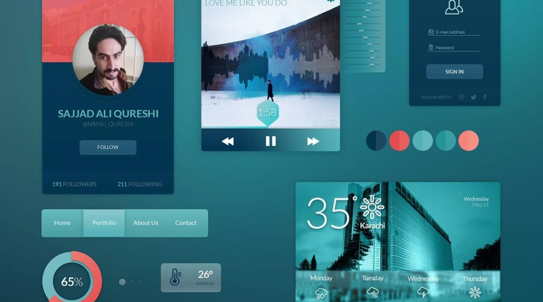
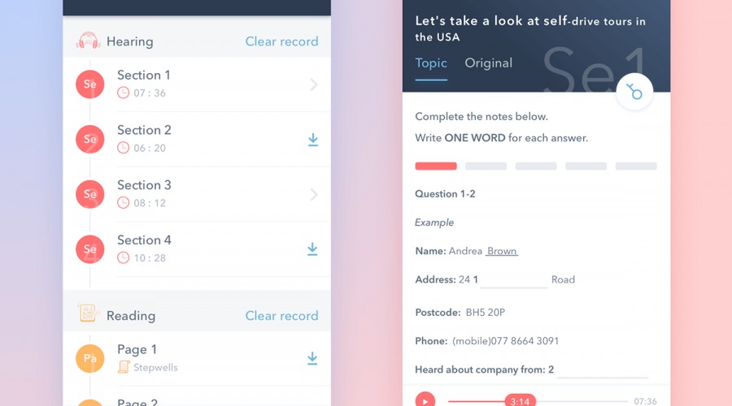
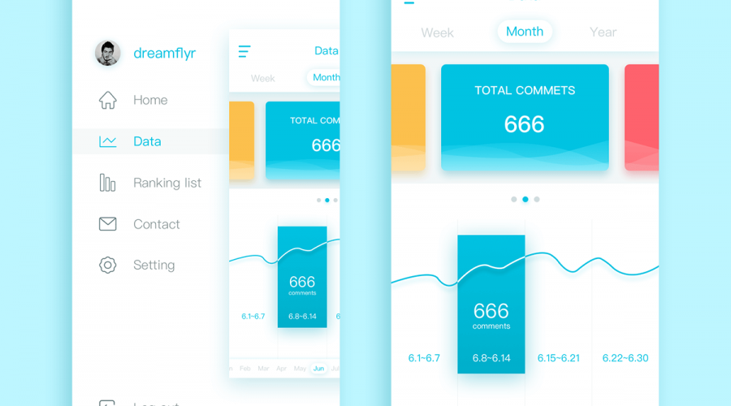
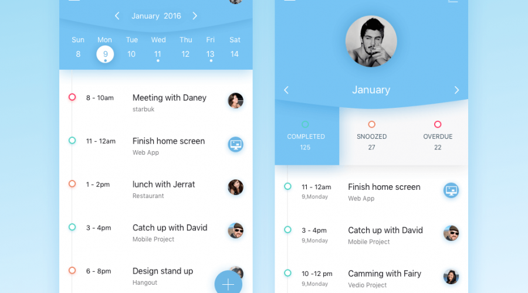

-
-

是时候改变你对微服务的认知了！
- 2018-02-28
大部分时候，微服务都是建立在一种基于请求和响应的协议之上。比如，REST等。这种方式是自然的。我们只需要调用另外一个模块就是了，然后等待响应返回，然后继续。这样的方式确实也满足了我们的很多的场景：用户通过点击页面的一个按钮然后希望发生一些事情。但是，当我们开始接触许多独立的service的时候，事情就发生改变了。随着service数量急速的增长。
标签： 微服务 请求和响应 事件流 异步机制 -
查看更多
- 
- 
- 
-
我们一直在制作美丽的网站
平面设计（graphic design），也称为视觉传达设计，是以“视觉”作为沟通和表现的方式，透过多种方式来创造和结合符号、图片和文字，借此作出用来传达想法或讯息的视觉表现。平面设计师可能会利用字体排印、视觉艺术、版面（page layout）、电脑软件等方面的专业技巧 来达成创作计划的目的。平面设计通常可指制作（设计）时的过程，以及最后完成的作品。组合是平面设计的最重要的特性之一，尤其是当产品使用预先存在的材料或多种元素融合。
-
Professional
High-end
查看更多园区一角
果实采收是果园管理中最后一个环节。如果采收不当，不仅造成减产且影响果实品质，甚至影响下一年的产量，因此，对采收工作必须十分重视。可采成熟度是指果实已达到应有大小与重量，但香气、风味、色泽尚未充分表现品